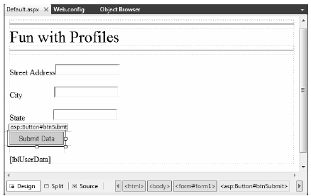
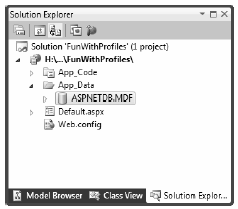

So far you have examined numerous techniques that allow you to remember user-level and applicationlevel bits of data. However, these techniques suffer from one major limitation: they exist only as long as the user is in session and the web application is running! However, many web sites require the ability to persist user information across sessions. For example, perhaps you need to give users the ability to build an account on your site. Maybe you need to persist instances of a ShoppingCart class across sessions (for an online shopping site). Or perhaps you wish to persist basic user preferences (themes, etc.).
While you most certainly could build a custom database (with several stored procedures) to hold such information, you would then need to build a custom code library to interact with these database objects. This is not necessarily a complex task, but the bottom line is that you are the individual in charge of building this sort of infrastructure.
To help simplify matters, ASP.NET ships with an out-of-the-box user profile management API and database system for this very purpose. In addition to providing the necessary infrastructure, the Profile API allows you to define the data to be persisted directly within your Web.config file (for purposes of simplification); however, you are also able to persist any [Serializable] type. Before we get too far ahead of ourselves, let’s check out where the Profile API will be storing the specified data.
Every ASP.NET web site built with Visual Studio 2010 can support an App_Data subdirectory. By default, the Profile API (as well as other services, such as the ASP.NET role membership API, which is not examined in this text) is configured to make use of a local SQL Server 2010 database named ASPNETDB.mdf, located within the App_Data folder. This default behavior is due to settings within the machine.config file for the current .NET installation on your machine. In fact, when your code base makes use of any ASP.NET service requiring the App_Data folder, the ASPNETDB.mdf data file will be automatically created on the fly if a copy does not currently exist.
If you’d rather have the ASP.NET runtime communicate with an ASPNETDB.mdf file located on another networked machine, or you’d prefer to install this database on an instance of SQL Server 7.0 (or higher), you will need to manually build ASPNETDB.mdf using the aspnet_regsql.exe command-line utility. Like any good command-line tool, aspnet_regsql.exe provides numerous options; however, if you run the tool with no arguments, like so:
aspnet_regsql
you will launch a GUI-based wizard that will walk you through the process of creating and installing ASPNETDB.mdf on your machine (and version of SQL Server) of choice.
Now, assuming your site is not using a local copy of the database under the App_Data folder, the final step is to update your Web.config file to point to the unique location of your ASPNETDB.mdf. Assume you have installed ASPNETDB.mdf on a machine named ProductionServer. The following (partial) machine.config file would instruct the Profile API where to find the necessary database items in their default location (you could add a custom Web.config to change these defaults):
<configuration> <connectionStrings> <add name="LocalSqlServer" connectionString ="Data Source=ProductionServer;Integrated Security=SSPI;Initial Catalog=aspnetdb;" providerName="System.Data.SqlClient"/> </connectionStrings> <system.web> <profile> <providers> <clear/> <add name="AspNetSqlProfileProvider" connectionStringName="LocalSqlServer" applicationName="/" type="System.Web.Profile.SqlProfileProvider, System.Web, Version=4.0.0.0, Culture=neutral, PublicKeyToken=b03f5f7f11d50a3a" /> </providers> </profile> </system.web> </configuration>
Like most *.config files, this looks much worse than it is. Basically we are defining a <connectionString> element with the necessary data, followed by a named instance of the SqlProfileProvider (this is the default provider used regardless of physical location of the ASPNETDB.mdf).
Note For simplicity, I will assume that you’ll use the autogenerated ASPNETDB.mdf database located under your web application’s App_Data subdirectory.
Note For simplicity, I will assume that you’ll use the autogenerated ASPNETDB.mdf database located under your web application’s App_Data subdirectory.
As mentioned, a user profile is defined within a Web.config file. The really nifty aspect of this approach is that you can interact with this profile in a strongly typed manner using the inherited Profile property in your code files. To illustrate this, create a new Empty Web Site named FunWithProfiles, add a new *.aspx file, and open your Web.config file for editing.
Our goal is to make a profile that models the home address of the users who are in session, as well as the total number of times they have posted to this site. Not surprisingly, profile data is defined within a <profile> element using a set of name/data type pairs. Consider the following profile, which is created within the scope of the <system.web> element:
<profile> <properties> <add name="StreetAddress" type="System.String" /> <add name="City" type="System.String" /> <add name="State" type="System.String" /> <add name="TotalPost" type="System.Int32" /> </properties> </profile>
Here, we have specified a name and CLR data type for each item in the profile (of course, we could add additional items for zip code, name, and so forth, but I am sure you get the idea). Strictly speaking, the type attribute is optional; however, the default is a System.String. As you would guess, there are many other attributes that can be specified in a profile entry to further qualify how this information should be persisted in ASPNETDB.mdf. Table 34-4 illustrates some of the core attributes.
Table 34-4. Select Attributes of Profile Data
| Attribute | Example Values | Meaning in Life |
|---|---|---|
| allowAnonymous | True | False | Restricts or allows anonymous access to this value. If it is set to false, anonymous users won’t have access to this profile value. |
| defaultValue | String | The value to return if the property has not been explicitly set. |
| Name | String | A unique identifier for this property. |
| Provider | String | The provider used to manage this value. It overrides the defaultProvider setting in Web.config or machine.config. |
| readOnly | True | False | Restricts or allows write access (the default is false, i.e. it’s not read-only). |
| serializeAs | String | XML | Binary | The format of a value when persisting in the data store. |
| type | Primitive | Userdefined type | A .NET primitive type or class. Class names must be fully qualified (e.g., MyApp.UserData.ColorPrefs). |
We will see some of these attributes in action as we modify the current profile. For now, let’s see how to access this data programmatically from within our pages.
Recall that the whole purpose of the ASP.NET Profile API is to automate the process of writing data to (and reading data from) a dedicated database. To test this out for yourself, update the UI of your Default.aspx file with a set of TextBoxes (and descriptive Labels) to gather the street address, city, and state of the user. As well, add a Button (named btnSubmit) and a final Label (named lblUserData) that will be used to display the persisted data, as shown in Figure 34-10.
Figure 34-10 The UI of the FunWithProfiles Default.aspx page
Now, within the Click event handler of the button, make use of the inherited Profile property to persist each point of profile data based on what the user has entered in the related TextBox. Once you have persisted each piece of data within ASPNETDB.mdf, read each piece of data out of the database and format it into a string that is displayed on the lblUserData Label type. Finally, handle the page’s Load event, and display the same information on the Label type. In this way, when users come to the page, they can see their current settings. Here is the complete code file:
public partial class _Default : System.Web.UI.Page { protected void Page_Load(object sender, EventArgs e) { GetUserAddress(); } protected void btnSubmit_Click(object sender, EventArgs e) { // Database writes happening here! Profile.StreetAddress = txtStreetAddress.Text; Profile.City = txtCity.Text; Profile.State = txtState.Text; // Get settings from database. GetUserAddress(); } private void GetUserAddress() { // Database reads happening here! lblUserData.Text = String.Format("You live here: {0}, {1}, {2}", Profile.StreetAddress, Profile.City, Profile.State); } }
Now if you run this page, you will notice a lengthy delay the first time Default.aspx is requested. The reason is that the ASPNETDB.mdf file is being created on the fly and placed within your App_Data folder. You can verify this for yourself by refreshing Solution Explorer (see Figure 34-11).
Figure 34-11 Behold ASPNETDB.mdf!
You will also find that the first time you come to this page, the lblUserData Label does not display any profile data, as you have not yet entered your data into the correct table of ASPNETDB.mdf. Once you enter values in the TextBox controls and post back to the server, you will find this Label is formatted with the persisted data.
Now, for the really interesting aspect of this technology. If you shut down your browser and rerun your web site, you will find that your previously entered profile data has indeed been persisted, as the Label displays the correct information. This begs the obvious question, how were you remembered?
For this example, the Profile API used your Windows network identity, which was obtained via your current machine credentials. However, when you are building public web sites (where the users are not part of a given domain), rest assured that the Profile API integrates with the Forms-based authentication model of ASP.NET and also supports the notion of “anonymous profiles,” which allow you to persist profile data for users who do not currently have an active identity on your site.
Note This edition of the text does not address ASP.NET security topics (such as Forms-based authentication or anonymous profiles). Consult the .NET Framework 4.0 SDK documentation for details.
To wrap up this chapter, allow me to make a few additional comments on how profile data may be defined within a Web.config file. The current profile simply defined four pieces of data that were exposed directly from the profile type. When you build more complex profiles, it can be helpful to group related pieces of data under a unique name. Consider the following update:
<profile> <properties> <group name ="Address"> <add name="StreetAddress" type="String" /> <add name="City" type="String" /> <add name="State" type="String" /> </group> <add name="TotalPost" type="Integer" /> </properties> </profile>
This time we have defined a custom group named Address to expose the street address, city, and state of our user. To access this data in our pages would now require us to update our code base by specifying Profile.Address to get each subitem. For example, here is the updated GetUserAddress() method (the Click event handler for the Button would need to be updated in a similar manner):
private void GetUserAddress() { // Database reads happening here! lblUserData.Text = String.Format("You live here: {0}, {1}, {2}", Profile.Address.StreetAddress, Profile.Address.City, Profile.Address.State); }
Before you run this example, you need to delete ASPNETDB.mdf from your App_Data folder, to ensure the database schema is refreshed. Once you have done so, you should be able to run your web site example without error.
Note A profile can contain as many groups as you feel are necessary. Simply define multiple <group> elements within your <properties> scope.
Finally, it is worth pointing out that a profile may also persist (and obtain) custom objects to and from ASPNETDB.mdf. To illustrate, assume you wanted to build a custom class (or structure) that will represent the user’s address data. The only requirement expected by the Profile API is that the type be marked with the [Serializable] attribute, for example:
[Serializable] public class UserAddress { public string Street = string.Empty; public string City = string.Empty; public string State = string.Empty; }
With this class in place, our profile definition can now be updated as follows (notice I removed the custom group, although this is not mandatory):
<profile> <properties> <add name="AddressInfo" type="UserAddress" serializeAs ="Binary"/> <add name="TotalPost" type="Integer" /> </properties> </profile>
Note that when you are adding [Serializable] types to a profile, the type attribute is the fully qualified named of the type being persisted. As you will see from the Visual Studio 2010 IntelliSense, your core choices are binary, XML, or string data. Now that we are capturing street address information as a custom class type, we (once again) need to update our code base:
private void GetUserAddress() { // Database reads happening here! lblUserData.Text = String.Format("You live here: {0}, {1}, {2}", Profile.AddressInfo.Street, Profile.AddressInfo.City, Profile.AddressInfo.State); }
To be sure, there is much more to the Profile API than I’ve had space to cover here. For example, the Profile property actually encapsulates a type named ProfileCommon. Using this type, you are able to programmatically obtain all information for a given user, delete (or add) profiles to ASPNETDB.mdf, update aspects of a profile, and so forth.
Moreover, the Profile API has numerous points of extensibility that can allow you to optimize how the profile manager accesses the tables of the ASPNETDB.mdf database. As you would expect, there are many ways to decrease the number of “hits” this database takes. Interested readers are encouraged to consult the .NET Framework 4.0 SDK documentation for further details.
Source Code The FunWithProfiles web site is included under the Chapter 34 subdirectory.